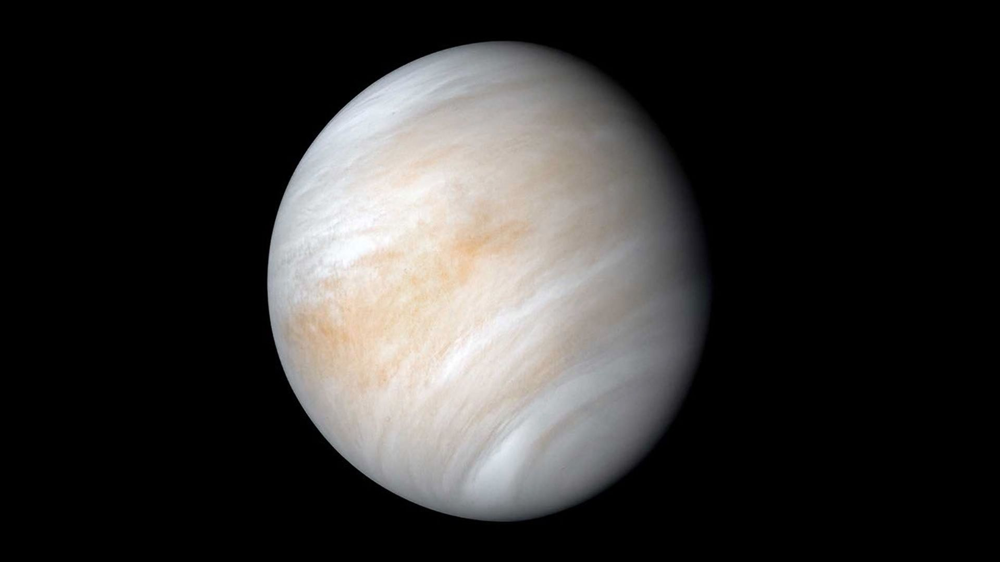
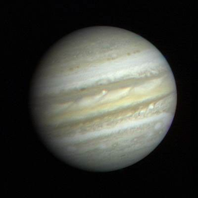
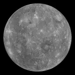
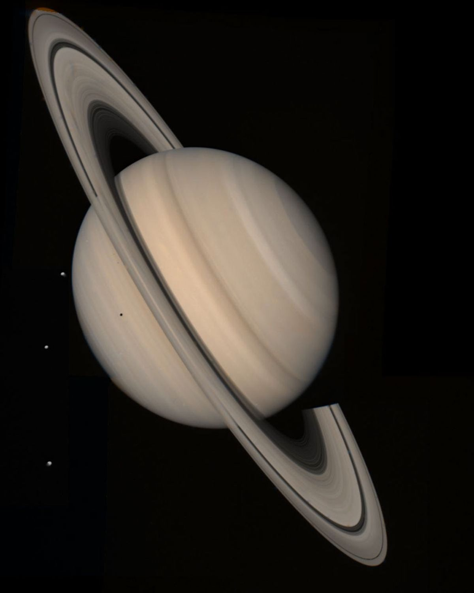
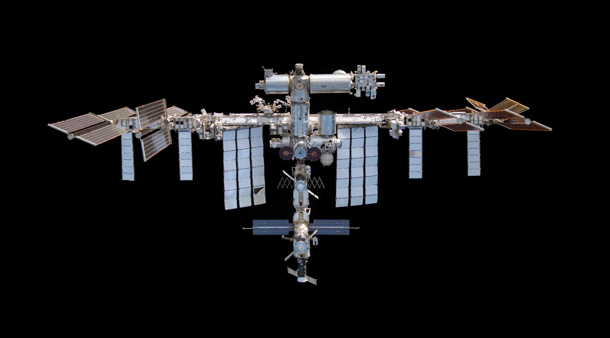
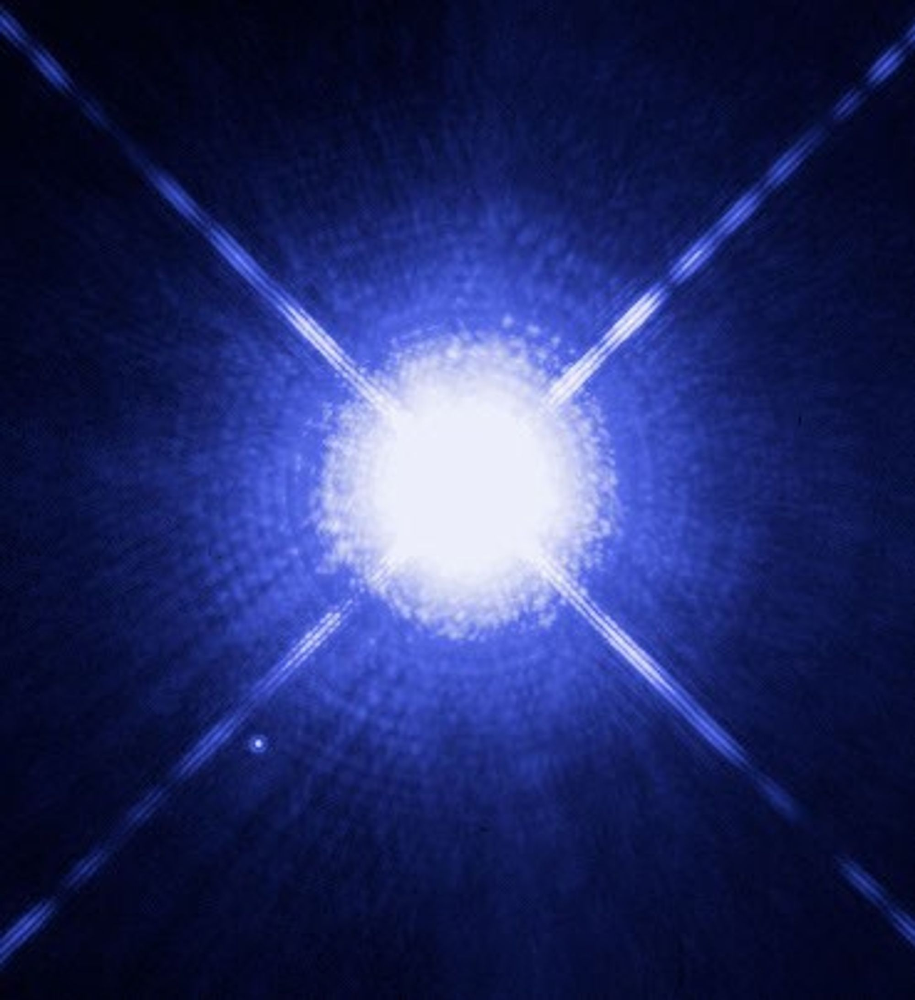

In this section you can find information about objects visible with naked eye in the night sky over London (GREATER LONDON).
Note: The position of sky objects changes depending on the date, time, season, weather and light pollution, so this website shows simplified directions for educational purposes.
The Moon
The Moon is the brightest natural object in the night sky, and from Greater London it can usually be spotted in the east, south or west, depending on the time of night.

Venus
Venus is the brightest planet and often looks like a very bright star, usually spotted low in the western sky after sunset or the eastern sky before sunrise.

Jupiter
Jupiter is one of the brightest planets and can look like a strong white star, often spotted in the southern part of the sky when it is visible.

Mars
Mars is a planet that can sometimes look slightly red or orange, usually spotted in the east, south or west depending on the season.

Mercury
Mercury is difficult to see because it stays close to the Sun, but from London it can sometimes be spotted very low in the western sky after sunset or the eastern sky before sunrise.

Saturn
Saturn is a planet that can sometimes look slightly red or orange, usually spotted in the east, south or west depending on the season.

International Space Station
The ISS looks like a bright fast-moving star crossing the sky, usually appearing from the west or southwest and moving across the sky for a few minutes.

Sirius
Sirius (also known as the "Dog Star") is the brightest star in the night sky. It is located in the constellation Canis Major. From London, Sirius is best seen during the winter months (December to March) in the southern sky.